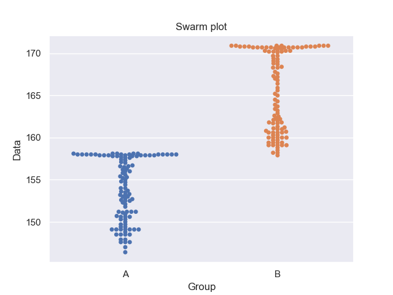
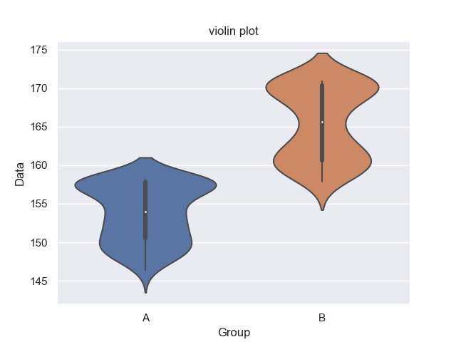
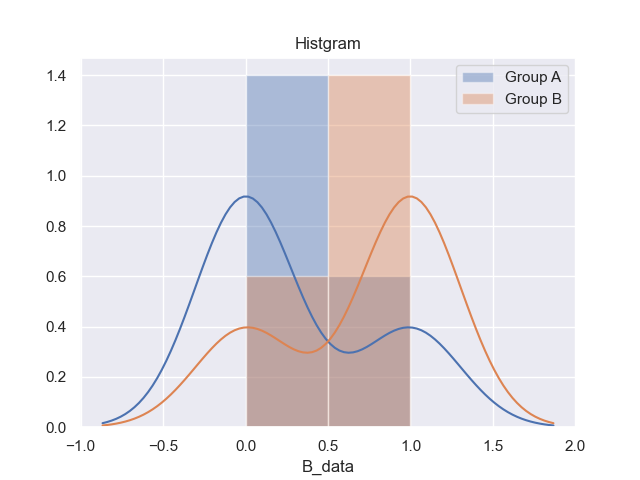
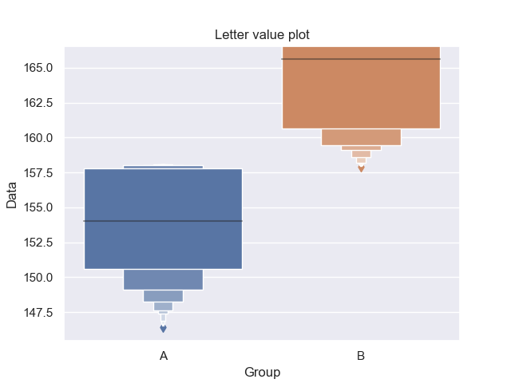
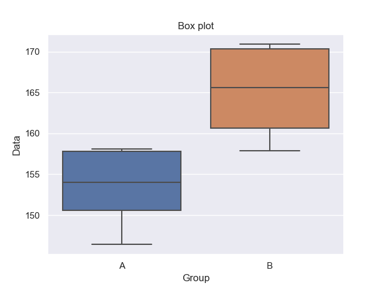
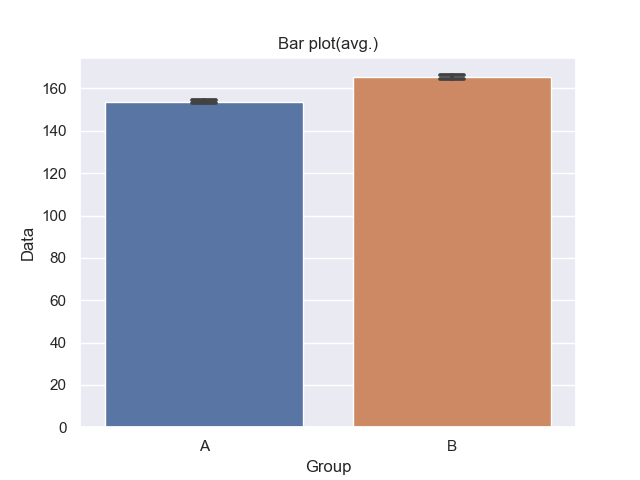

対応がないt検定
P value : 1.1710746880744137e-49
有意差あり
|
A_user |
A_data |
| 0 |
2015年 女 平均身長(cm) |
157.9 |
| 1 |
2014年 女 平均身長(cm) |
157.9 |
| 2 |
2013年 女 平均身長(cm) |
158.0 |
| 3 |
2012年 女 平均身長(cm) |
158.0 |
| 4 |
2011年 女 平均身長(cm) |
158.0 |
| 5 |
2010年 女 平均身長(cm) |
158.0 |
| 6 |
2009年 女 平均身長(cm) |
157.9 |
| 7 |
2008年 女 平均身長(cm) |
158.0 |
| 8 |
2007年 女 平均身長(cm) |
158.0 |
| 9 |
2006年 女 平均身長(cm) |
158.0 |
| 10 |
2005年 女 平均身長(cm) |
158.0 |
| 11 |
2004年 女 平均身長(cm) |
157.9 |
| 12 |
2003年 女 平均身長(cm) |
157.8 |
| 13 |
2002年 女 平均身長(cm) |
157.9 |
| 14 |
2001年 女 平均身長(cm) |
158.0 |
| 15 |
2000年 女 平均身長(cm) |
158.1 |
| 16 |
1999年 女 平均身長(cm) |
158.1 |
| 17 |
1998年 女 平均身長(cm) |
158.1 |
| 18 |
1997年 女 平均身長(cm) |
158.0 |
| 19 |
1996年 女 平均身長(cm) |
158.1 |
| 20 |
1995年 女 平均身長(cm) |
158.0 |
| 21 |
1994年 女 平均身長(cm) |
158.1 |
| 22 |
1993年 女 平均身長(cm) |
158.0 |
| 23 |
1992年 女 平均身長(cm) |
157.9 |
| 24 |
1991年 女 平均身長(cm) |
157.9 |
| 25 |
1990年 女 平均身長(cm) |
157.9 |
| 26 |
1989年 女 平均身長(cm) |
157.8 |
| 27 |
1988年 女 平均身長(cm) |
157.8 |
| 28 |
1987年 女 平均身長(cm) |
157.8 |
| 29 |
1986年 女 平均身長(cm) |
157.7 |
| 30 |
1985年 女 平均身長(cm) |
157.6 |
| 31 |
1984年 女 平均身長(cm) |
157.6 |
| 32 |
1983年 女 平均身長(cm) |
157.4 |
| 33 |
1982年 女 平均身長(cm) |
157.3 |
| 34 |
1981年 女 平均身長(cm) |
157.1 |
| 35 |
1980年 女 平均身長(cm) |
157.0 |
| 36 |
1979年 女 平均身長(cm) |
156.7 |
| 37 |
1978年 女 平均身長(cm) |
156.6 |
| 38 |
1977年 女 平均身長(cm) |
156.6 |
| 39 |
1976年 女 平均身長(cm) |
156.5 |
| 40 |
1975年 女 平均身長(cm) |
156.3 |
| 41 |
1974年 女 平均身長(cm) |
156.2 |
| 42 |
1973年 女 平均身長(cm) |
156.0 |
| 43 |
1972年 女 平均身長(cm) |
155.8 |
| 44 |
1971年 女 平均身長(cm) |
156.0 |
| 45 |
1970年 女 平均身長(cm) |
155.6 |
| 46 |
1969年 女 平均身長(cm) |
155.4 |
| 47 |
1968年 女 平均身長(cm) |
155.3 |
| 48 |
1967年 女 平均身長(cm) |
155.2 |
| 49 |
1966年 女 平均身長(cm) |
155.0 |
| 50 |
1965年 女 平均身長(cm) |
154.8 |
| 51 |
1964年 女 平均身長(cm) |
154.7 |
| 52 |
1963年 女 平均身長(cm) |
154.4 |
| 53 |
1962年 女 平均身長(cm) |
154.0 |
| 54 |
1961年 女 平均身長(cm) |
154.0 |
| 55 |
1960年 女 平均身長(cm) |
153.7 |
| 56 |
1959年 女 平均身長(cm) |
153.6 |
| 57 |
1958年 女 平均身長(cm) |
153.5 |
| 58 |
1957年 女 平均身長(cm) |
153.3 |
| 59 |
1956年 女 平均身長(cm) |
153.2 |
| 60 |
1955年 女 平均身長(cm) |
153.2 |
| 61 |
1954年 女 平均身長(cm) |
153.0 |
| 62 |
1953年 女 平均身長(cm) |
153.0 |
| 63 |
1952年 女 平均身長(cm) |
152.8 |
| 64 |
1951年 女 平均身長(cm) |
152.5 |
| 65 |
1950年 女 平均身長(cm) |
152.7 |
| 66 |
1949年 女 平均身長(cm) |
152.3 |
| 67 |
1948年 女 平均身長(cm) |
152.1 |
| 68 |
1939年 女 平均身長(cm) |
152.5 |
| 69 |
1938年 女 平均身長(cm) |
152.6 |
| 70 |
1937年 女 平均身長(cm) |
150.9 |
| 71 |
1936年 女 平均身長(cm) |
151.8 |
| 72 |
1935年 女 平均身長(cm) |
151.2 |
| 73 |
1934年 女 平均身長(cm) |
151.2 |
| 74 |
1933年 女 平均身長(cm) |
151.1 |
| 75 |
1932年 女 平均身長(cm) |
151.2 |
| 76 |
1931年 女 平均身長(cm) |
151.2 |
| 77 |
1930年 女 平均身長(cm) |
150.7 |
| 78 |
1929年 女 平均身長(cm) |
150.6 |
| 79 |
1928年 女 平均身長(cm) |
150.6 |
| 80 |
1927年 女 平均身長(cm) |
150.6 |
| 81 |
1926年 女 平均身長(cm) |
150.3 |
| 82 |
1925年 女 平均身長(cm) |
150.3 |
| 83 |
1924年 女 平均身長(cm) |
150.0 |
| 84 |
1923年 女 平均身長(cm) |
149.7 |
| 85 |
1922年 女 平均身長(cm) |
149.1 |
| 86 |
1920年 女 平均身長(cm) |
149.7 |
| 87 |
1919年 女 平均身長(cm) |
149.4 |
| 88 |
1918年 女 平均身長(cm) |
149.4 |
| 89 |
1917年 女 平均身長(cm) |
149.1 |
| 90 |
1916年 女 平均身長(cm) |
149.1 |
| 91 |
1915年 女 平均身長(cm) |
149.1 |
| 92 |
1914年 女 平均身長(cm) |
149.1 |
| 93 |
1913年 女 平均身長(cm) |
148.5 |
| 94 |
1912年 女 平均身長(cm) |
148.5 |
| 95 |
1911年 女 平均身長(cm) |
149.1 |
| 96 |
1910年 女 平均身長(cm) |
148.8 |
| 97 |
1909年 女 平均身長(cm) |
148.5 |
| 98 |
1908年 女 平均身長(cm) |
149.1 |
| 99 |
1907年 女 平均身長(cm) |
148.5 |
| 100 |
1906年 女 平均身長(cm) |
147.6 |
| 101 |
1905年 女 平均身長(cm) |
147.9 |
| 102 |
1904年 女 平均身長(cm) |
147.9 |
| 103 |
1903年 女 平均身長(cm) |
147.6 |
| 104 |
1902年 女 平均身長(cm) |
147.6 |
| 105 |
1901年 女 平均身長(cm) |
146.4 |
| 106 |
1900年 女 平均身長(cm) |
147.0 |
|
B_user |
B_data |
| 0 |
2015年 男 平均身長(cm) |
170.7 |
| 1 |
2014年 男 平均身長(cm) |
170.7 |
| 2 |
2013年 男 平均身長(cm) |
170.7 |
| 3 |
2012年 男 平均身長(cm) |
170.7 |
| 4 |
2011年 男 平均身長(cm) |
170.7 |
| 5 |
2010年 男 平均身長(cm) |
170.7 |
| 6 |
2009年 男 平均身長(cm) |
170.8 |
| 7 |
2008年 男 平均身長(cm) |
170.7 |
| 8 |
2007年 男 平均身長(cm) |
170.8 |
| 9 |
2006年 男 平均身長(cm) |
170.9 |
| 10 |
2005年 男 平均身長(cm) |
170.8 |
| 11 |
2004年 男 平均身長(cm) |
170.8 |
| 12 |
2003年 男 平均身長(cm) |
170.7 |
| 13 |
2002年 男 平均身長(cm) |
170.7 |
| 14 |
2001年 男 平均身長(cm) |
170.9 |
| 15 |
2000年 男 平均身長(cm) |
170.8 |
| 16 |
1999年 男 平均身長(cm) |
170.9 |
| 17 |
1998年 男 平均身長(cm) |
170.9 |
| 18 |
1997年 男 平均身長(cm) |
170.9 |
| 19 |
1996年 男 平均身長(cm) |
170.9 |
| 20 |
1995年 男 平均身長(cm) |
170.8 |
| 21 |
1994年 男 平均身長(cm) |
170.9 |
| 22 |
1993年 男 平均身長(cm) |
170.7 |
| 23 |
1992年 男 平均身長(cm) |
170.7 |
| 24 |
1991年 男 平均身長(cm) |
170.6 |
| 25 |
1990年 男 平均身長(cm) |
170.4 |
| 26 |
1989年 男 平均身長(cm) |
170.5 |
| 27 |
1988年 男 平均身長(cm) |
170.3 |
| 28 |
1987年 男 平均身長(cm) |
170.3 |
| 29 |
1986年 男 平均身長(cm) |
170.3 |
| 30 |
1985年 男 平均身長(cm) |
170.2 |
| 31 |
1984年 男 平均身長(cm) |
170.2 |
| 32 |
1983年 男 平均身長(cm) |
170.2 |
| 33 |
1982年 男 平均身長(cm) |
170.1 |
| 34 |
1981年 男 平均身長(cm) |
169.7 |
| 35 |
1980年 男 平均身長(cm) |
169.7 |
| 36 |
1979年 男 平均身長(cm) |
169.4 |
| 37 |
1978年 男 平均身長(cm) |
169.3 |
| 38 |
1977年 男 平均身長(cm) |
169.1 |
| 39 |
1976年 男 平均身長(cm) |
169.0 |
| 40 |
1975年 男 平均身長(cm) |
168.8 |
| 41 |
1974年 男 平均身長(cm) |
168.7 |
| 42 |
1973年 男 平均身長(cm) |
168.4 |
| 43 |
1972年 男 平均身長(cm) |
168.3 |
| 44 |
1971年 男 平均身長(cm) |
168.3 |
| 45 |
1970年 男 平均身長(cm) |
167.8 |
| 46 |
1969年 男 平均身長(cm) |
167.6 |
| 47 |
1968年 男 平均身長(cm) |
167.3 |
| 48 |
1967年 男 平均身長(cm) |
167.2 |
| 49 |
1966年 男 平均身長(cm) |
167.0 |
| 50 |
1965年 男 平均身長(cm) |
166.8 |
| 51 |
1964年 男 平均身長(cm) |
166.4 |
| 52 |
1963年 男 平均身長(cm) |
165.9 |
| 53 |
1962年 男 平均身長(cm) |
165.6 |
| 54 |
1961年 男 平均身長(cm) |
165.2 |
| 55 |
1960年 男 平均身長(cm) |
165.0 |
| 56 |
1959年 男 平均身長(cm) |
164.5 |
| 57 |
1958年 男 平均身長(cm) |
164.3 |
| 58 |
1957年 男 平均身長(cm) |
163.9 |
| 59 |
1956年 男 平均身長(cm) |
163.7 |
| 60 |
1955年 男 平均身長(cm) |
163.4 |
| 61 |
1954年 男 平均身長(cm) |
163.2 |
| 62 |
1953年 男 平均身長(cm) |
162.9 |
| 63 |
1952年 男 平均身長(cm) |
162.6 |
| 64 |
1951年 男 平均身長(cm) |
162.2 |
| 65 |
1950年 男 平均身長(cm) |
161.8 |
| 66 |
1949年 男 平均身長(cm) |
161.2 |
| 67 |
1948年 男 平均身長(cm) |
160.6 |
| 68 |
1939年 男 平均身長(cm) |
162.5 |
| 69 |
1938年 男 平均身長(cm) |
162.3 |
| 70 |
1937年 男 平均身長(cm) |
161.0 |
| 71 |
1936年 男 平均身長(cm) |
162.0 |
| 72 |
1935年 男 平均身長(cm) |
161.8 |
| 73 |
1934年 男 平均身長(cm) |
162.1 |
| 74 |
1933年 男 平均身長(cm) |
161.7 |
| 75 |
1932年 男 平均身長(cm) |
161.7 |
| 76 |
1931年 男 平均身長(cm) |
161.3 |
| 77 |
1930年 男 平均身長(cm) |
161.0 |
| 78 |
1929年 男 平均身長(cm) |
161.1 |
| 79 |
1928年 男 平均身長(cm) |
160.8 |
| 80 |
1927年 男 平均身長(cm) |
160.7 |
| 81 |
1926年 男 平均身長(cm) |
160.6 |
| 82 |
1925年 男 平均身長(cm) |
160.6 |
| 83 |
1924年 男 平均身長(cm) |
160.3 |
| 84 |
1923年 男 平均身長(cm) |
160.6 |
| 85 |
1922年 男 平均身長(cm) |
160.3 |
| 86 |
1920年 男 平均身長(cm) |
160.0 |
| 87 |
1919年 男 平均身長(cm) |
160.0 |
| 88 |
1918年 男 平均身長(cm) |
160.0 |
| 89 |
1917年 男 平均身長(cm) |
160.0 |
| 90 |
1916年 男 平均身長(cm) |
160.0 |
| 91 |
1915年 男 平均身長(cm) |
159.7 |
| 92 |
1914年 男 平均身長(cm) |
159.7 |
| 93 |
1913年 男 平均身長(cm) |
159.4 |
| 94 |
1912年 男 平均身長(cm) |
159.4 |
| 95 |
1911年 男 平均身長(cm) |
159.4 |
| 96 |
1910年 男 平均身長(cm) |
159.1 |
| 97 |
1909年 男 平均身長(cm) |
159.4 |
| 98 |
1908年 男 平均身長(cm) |
159.1 |
| 99 |
1907年 男 平均身長(cm) |
158.8 |
| 100 |
1906年 男 平均身長(cm) |
159.1 |
| 101 |
1905年 男 平均身長(cm) |
159.1 |
| 102 |
1904年 男 平均身長(cm) |
158.5 |
| 103 |
1903年 男 平均身長(cm) |
158.2 |
| 104 |
1902年 男 平均身長(cm) |
158.2 |
| 105 |
1901年 男 平均身長(cm) |
159.1 |
| 106 |
1900年 男 平均身長(cm) |
157.9 |
